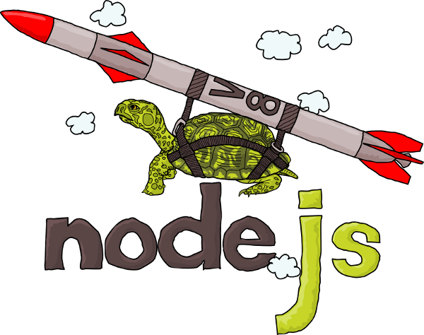

JavaScript en el Servidor
http://agares.co/nodejscpInstalando nodejs
Nodejs
Ryan Dahl starting 2009
Non blocking IO
(E/S no bloqueante)
- Minimizar Overhead
- Orientado a Eventos
- Maximizar escalabilidad
Construido sobre motor V8

- Creado por Google
- Escrito en C++
- Usado por Chrome
Casos de éxito


¡Hola Campus!
console.log("Hola");
console.log("¡Campus Party Co 2012!");
¡Hola Campus! asincrono
var fs = require('fs');
fs.readFile("data.txt", function(err, data) {
console.log(data.toString());
});
console.log("Campuseros!! ");
¿Qué ventajas tiene javaScript en el servidor?
- JavaScript como lenguaje de scripting
- Basado en eventos
- El mismo lenguaje en el servidor y en el navegador
- Comunidad en crecimiento
- E/S
Chat simple en node por telnet
var net = require("net");
var sockets=[];
var idCont=0;
var server = net.createServer(function(socket) {
var enviarMensaje= function(id, mensaje){
for(var i=0; i<sockets.length; i++){
console.log(sockets[i].id);
if(sockets[i].id!=id){
sockets[i].write(mensaje);
}
}
}
socket.on('end', function() {
console.log('bye');
});
socket.on('connect', function(){
socket.write('hola campusero al nodechat!\r\n');
socket.id= idCont++;
sockets.push(socket);
});
socket.on('data', function(data){
enviarMensaje(socket.id, data.toString());
});
});
server.listen(5001, function() {
console.log('server iniciado');
});
Http server con node
var http = require("http");
var server = http.createServer(function (req, res) {
res.writeHead(200, {'Content-Type': 'text/plain'});
var agent= req.headers["user-agent"];
res.end("Hola Campusero, estas usando: \n"+agent,"utf8");
});
console.log("server arriba");
server.listen(8001);

(Package Manager para Node)
Manejo de dependencias o módulos en node.js
- Publicar
- Descubrir
- Instalar
- Desarrollar
require.json
manejo fácil de dependencias
{
"name": "bomberbot"
, "version": "0.0.1"
, "private": true
, "dependencies": {
"express": "2.5.8"
, "connect": "1.8.x"
, "ejs": ">= 0.0.1"
, "mongodb": ">= 0.9.6-7"
, "mongoose": ">= 2.5.10"
, "connect-mongodb": "1.1.1"
, "connect-timeout": "0.0.1"
},
"engines": {
"node": "0.6.x"
}
}
Paquetes disponibles
- express framework web
- socket.io websockets
- mongoose ORM para mongo
- jade html template
- connect http middleware
- vows testing
- geekple.com/nodejs NodeJs package browser
Únete!
Gracias
Giovanny Beltran
agares.co
@_agares_